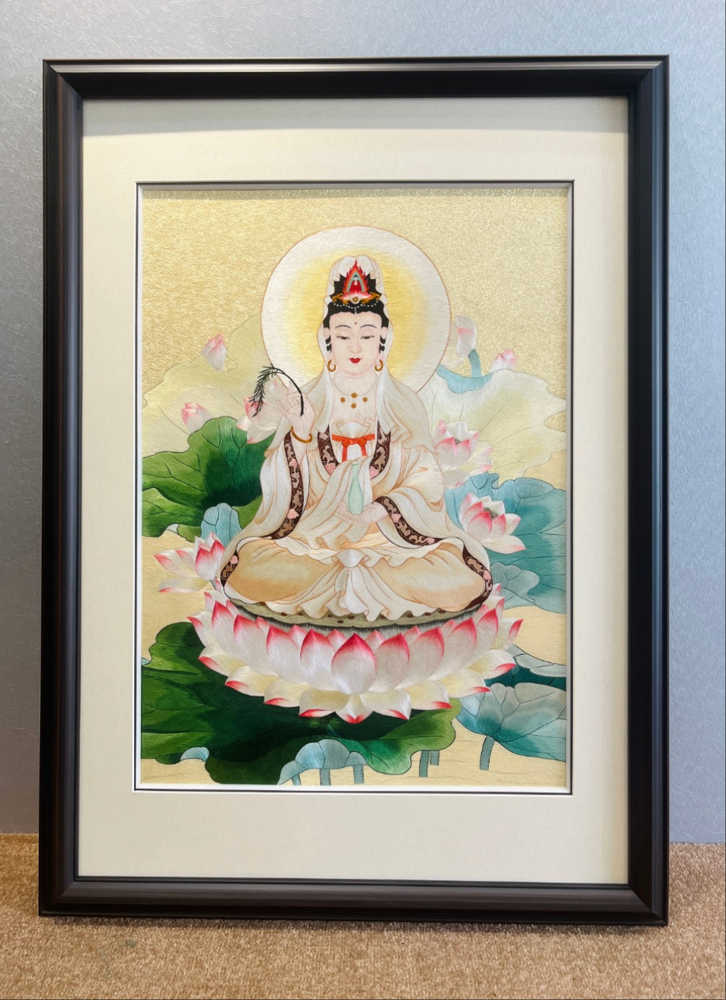
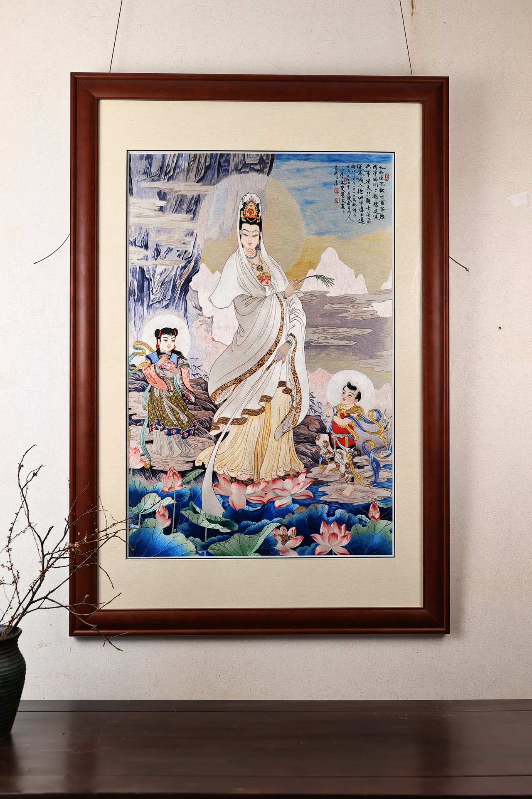

THE COLLECTION · 作品体系
不是把图片放在一起，
而是让每类作品各有位置。
杨雪刺绣工作室以苏绣为根，在不同题材中寻找最合适的画幅、针法与观看距离。每个系列都保留独立的气质，也共同呈现丝线的细、密、匀、活与光。
- 06
- 主题系列
- 纯手工
- 创作方式
- 一对一
- 定制服务
SIX COLLECTIONS · 六大系列
选一类题材，
走进一套完整作品。
所有封面使用统一画幅承载，横幅作品完整呈现空间关系，竖幅作品保留装裱全貌，不再用强行裁切换取表面的整齐。

01 / DOUBLE-SIDED
双面三异绣 · 国礼
同一底料之上，正反两面异形、异色、异针法。一块绣面承载两幅独立画卷。
进入系列
02 / SACRED FIGURES
苏绣佛像系列
以细密丝线还原庄严法相，让衣纹、莲瓣与慈悲神情在光线中温润显现。
进入系列
03 / INTERIOR BESPOKE
别墅挂画私人定制
从墙面尺度、家具关系与自然光出发，为玄关、客厅与书房定一方东方气韵。
进入系列
04 / WEDDING RITUAL
苏绣婚嫁系列
把凤冠霞帔、团扇、婚书与吉祥纹样重新带入中式婚礼，留住可传承的礼序。
进入系列
05 / LIVING CREATURES
苏绣动物系列
循毛理运针，以丝线表现毛发、羽翼与眼眸，让方寸绢帛显出生灵百态。
进入系列
06 / PORTRAIT COMMISSION
人物定制系列
从真实照片提炼神态、光影与情感，把值得纪念的人与时刻转化为丝线肖像。
进入系列CLOSER LOOK · 近看丝线
远看是画，
近看每一针都有方向。
作品的真正层次藏在细节里：两面不同的构图、丝线随角度变化的光泽、人物神态与手工走线，构成机器印刷无法替代的观看体验。




PRIVATE COMMISSION · 私人定制
让一件作品，
从您的故事开始。
欢迎提供空间照片、人物照片或题材想法。工作室将从画幅、构图、针法与装裱方式出发，为您完成一对一刺绣方案。